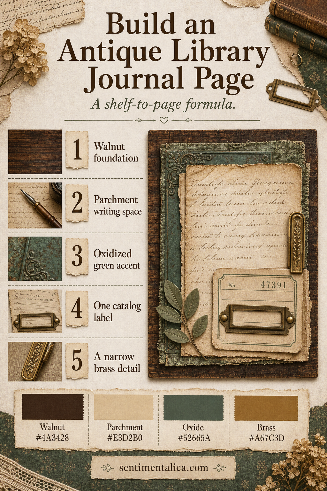
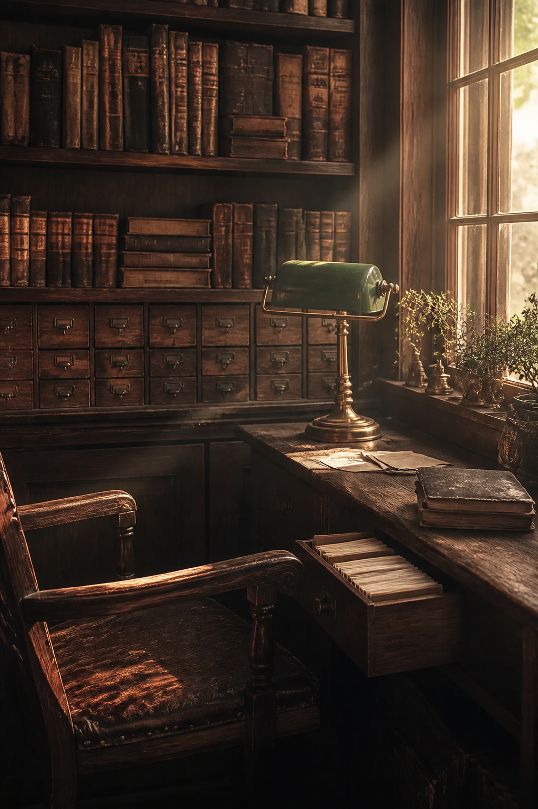

An antique library page feels convincing when it borrows the structure of the room rather than piling on book imagery. Dark shelves become the foundation, parchment becomes writing space, oxidized green brings quiet age, and brass marks the smallest points of light.

Build from dark to light
Start with a narrow Walnut #4A3428 foundation: a frame, torn strip, or fabric edge. Add a generous Parchment #E3D2B0 area where handwriting can remain readable. This light center prevents the historical mood from becoming muddy.
Add the library clues selectively
Use Oxide #52665A for one textile, book-cloth, or painted-paper layer. Add a single catalog label with a date, title, or personal classification. The label works best when it records something real: books borrowed, quotations collected, or places you want to study.

Let brass behave like light
Brass #A67C3D belongs in thin details: a line, clip, corner, or tiny seal. Repeat it once, then stop. Too much metallic color turns the page theatrical; a narrow glint suggests old hardware and lamplight.
If you want coordinated vintage, botanical, or dark-academia imagery for the collage layer, explore the Sentimentalica printable image collections. Choose one collection as the visual source and let your own notes, catalog cards, and found paper make the page personal.
Visuals in this article were created with AI assistance and art-directed for Sentimentalica.
Browse more atmospheric journal ideas in the Sentimentalica journal archive.